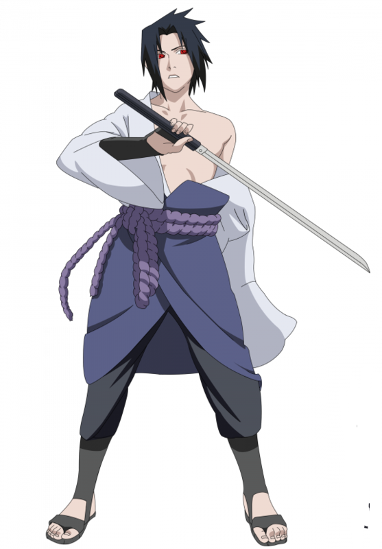

Naruto
Naruto (ナルト?) é uma série de mangá escrita e ilustrada por Masashi Kishimoto, que conta a história de Naruto Uzumaki, um jovem ninja que constantemente procura por reconhecimento e sonha em se tornar Hokage, o ninja líder de sua vila. A história é dividida em duas partes, a primeira parte se passa nos anos da pré-adolescência de Naruto, e a segunda parte se passa em sua adolescência. A série é baseada em dois mangás one-shots de Kishimoto: Karakuri (1995), e que por causa dele Kishimoto ganhou uma menção honrosa no prêmio Hop Step da Shueisha no ano seguinte, e Naruto (1997). A editora Panini Comics licenciou e publicou o mangá em três versões no Brasil, e em Portugal é a editora Devir Manga quem licencia e publica o mangá. A história de Naruto continua com o seu filho, Boruto Uzumaki em Boruto: Naruto Next Generations.
Veja abaixo três dos principais personagens da franquia
#001 - Naruto
- Região: Konoha
- Tipo: Vento
- clã: Uzumaki
#004 - Sasuke
- Região: Konoha
- Tipo: Fogo
- clã: Uchiha
#025 - Sakura
- Região: Konoha
- Tipo: Medico
- clã: Haruno
Veja uma galeria de imagens de alguns Ninjas: